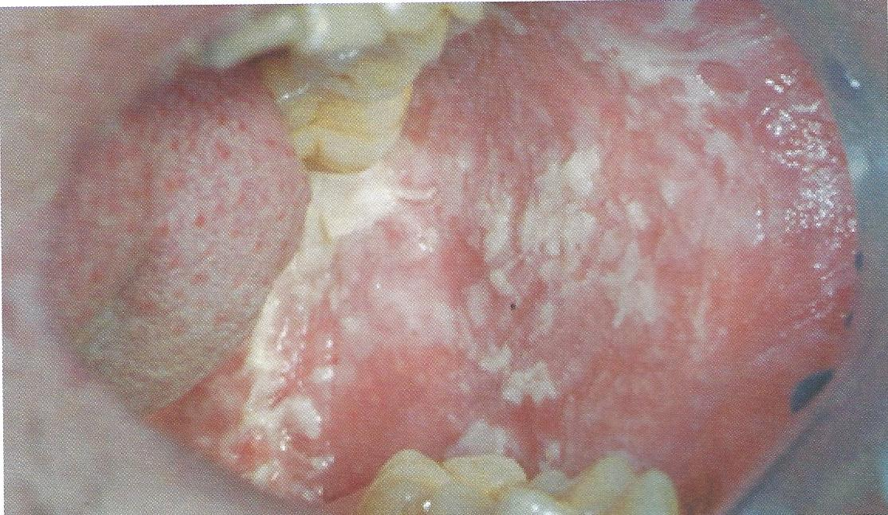

White sponge nevus
เป็นโรคที่ถ่ายทอดทางพันธุกรรม พบน้อย
เกิดจากความผิดปกติของการสร้าง keratin
มักพบรอยโรคตั้งแต่เด็ก และรอยโรคจะคงอยู่ตลอดชีวิต
ลักษณะทางคลินิก เป็นฝ้าขาวขรุขระ หนานุ่ม ปุยเหมือนลูกฟูก ไม่สามารถเช็ดออกได้
อาการ ไม่เจ็บ
การรักษา ไม่ต้องรักษา ไม่พบการเปลี่ยนแปลงกลายเป็นมะเร็ง